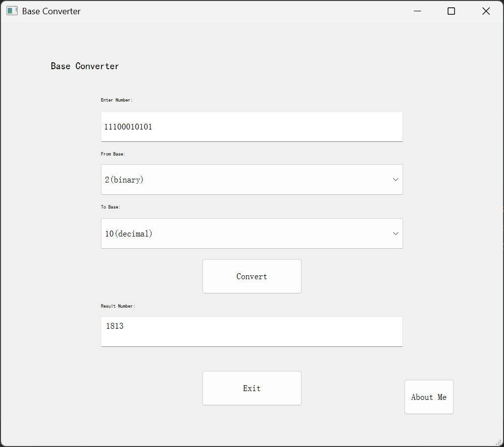

mainwindow.cpp
C++
// Select a file from the tree →A GUI-based number base converter built with Qt5 C++. Converts numbers between any base from 2 to 16 (binary, octal, decimal, hexadecimal, and custom). Features input validation with error dialogs, an "About Me" window, and a responsive UI with custom resize handling.
// Select a file from the tree →See the converter in action.

Application Screenshot